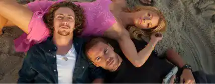
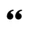
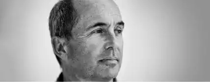

SAVAGES, LE LIVRE
Le roman a été écrit par Don Winslow et est
disponible dans les librairies Américaines
depuis 2010. Il a été écrit dans l’optique d’être
un jour adapté au cinéma et a même eu droit
à une suite deux ans après sa sortie : une suite
racontant le passé des trois protagonistes.

Ben, Chon et O © Savages, 2012
Un cartel pas comme les autres
On ne va pas se mentir, lorsque l’on parle de cartel
de drogue au cinéma, nous avons tendance à
imaginer un homme moustachu bourru et amoureux
de sa gâchette en guise de meneur. Mais Winslow
nous présente deux dealers différents, beaucoup
moins old school. Ils sont jeunes, ils n’apprécient pas
particulièrement la violence et leur commerce de
Marijuana leur sert plutôt à aider les autres, surtout
si ces derniers sont atteints d’une maladie grave. Par
opposition, nous avons le cartel mexicain qui cherche
à les racheter et qui, lui, correspond au stéréotype
qui nous ait montré depuis des années : un homme
de main violent, sexiste et qui se réjouit de la douleur
des autres. Un contraste très marquant qui saute aux
yeux mais qui fait du bien. Un peu de différence,
d’originalité, cela est souvent signe d’une oeuvre de
qualité.
Deux amis très différents
Chon est un ex militaire violent et encore choqué de
son expérience de la guerre, tandis que Ben est un
botaniste pacifiste ayant créé une association
permettant d’aider les pays africains qui en ont
besoin. L’un est défaitiste, l’autre est optimiste ; et si
leurs idéaux semblent les séparer, ils se complètent.
Là où Ben est celui qui enlève une bonne partie des
conflits créés par leur business peu commun ; Chon
est celui qui règle les problèmes restants. Même leur
petite amie commune se plaît à dire qu’ils sont à
l’opposé l’un de l’autre, mais pourtant si
complémentaires.

« O aime dire qu’ensemble,
Ben et Chon ne forment qu’un
seul homme au complet. »
La complémentarité des protagonistes
L’un ne sera jamais sans l’autre et inversement. O
aime dire qu’ensemble, Ben et Chon ne forment
qu’un seul homme au complet et, dans le film, elle
l’explique plus en détail. Sans la foi en l’humanité de
Ben, leur commerce aurait mal tourné depuis des
années ; tandis que sans la ténacité et la paranoïa
de Chon, son associé se serait fait marcher sur les
pieds. C’est parce qu’ils sont aussi différents que le
commerce des deux hommes fonctionne aussi bien.
EXTRAIT DE L’OEUVRE
Version française
" Nous proclamons la liberté de tout individu,
avons acheté et conduit des millions de
voitures pour le prouver, construit des routes
pour y conduire les voitures afin qu’on puisse
aller partout, qui n’est nulle part en réalité.
Nous avons arrosé nos jardins, lavé nos voitures,
avalé le contenu de nos bouteilles en plastique
afin de rester hydratés dans nos terres
déshydratées, nous avons construit des
parcs aquatiques.
Nous avons construit des temples pour nos
plaisirs - des studios cinématographiques, des
parcs d’attractions, des cathédrales en cristal,
des églises démesurées -- et nous sommes
agglutinés dedans.
Nous sommes allés à la plages, avons surfé sur
les vagues et vidé nos déchets dans l’eau que
nous disions aimer.
Nous nous sommes réinventés tous les jours, avons
reconstruit nos cultures, nous sommes enfermés
dans des communautés à accès restreint, nous
avons mangé de la nourriture bonne pour la santé,
nous avons arrêté de fumer, nous avons levé nos
visages tout en évitant le soleil, nous avons fait
peler notre peau, fait enlever nos rides, fait aspirer
notre graisse comme s’il s’agissait d’enfants non
voulus, nous avons défié le temps et la mort.
Nous avons fait de la richesse et de la santé des
Dieux.
Une religion de narcissisme.
Finalement, nous n’idolâtrions que nous mêmes.
Finalement, ce n’était pas assez. "
Version originale
“We proclaimed the freedom of the individual,
bought and drove millions of cars to prove it,
built more roads for the cars to drive on so we
could go the everywhere that was nowhere. We
watered our lawns, we washed our cars, we
gulped plastic bottles of water to stay hydrated
in our dehydrated land, we put up water parks.
We built temples to our fantasies—film studios,
amusement parks, crystal cathedrals,
megachurches—and flocked to them.
We went to the beach, rode the waves, and
poured our waste into the water we said we
loved.
We reinvented ourselves every day, remade our
culture, locked ourselves in gated communities,
we ate healthy food, we gave up smoking, we
lifted our faces while avoiding the sun, we had
our skin peeled, our lines removed, our fat
sucked away like our unwanted babies, we
defied aging and death.
We made gods of wealth and health.
A religion of narcissism.
In the end, we worshipped only ourselves.
In the end, it wasn’t enough.”
SAVAGES, L’AUTEUR
Fils de marin et de bibliothécaire, il grandit
entouré de livres et d’histoires en tous genres
dans une petite ville côtière de Rhode Island.
Passionné par les autres cultures et les voyages,
il a longtemps parcouru le monde avant de
vivre de sa passion pour l’écriture.

Don Winslow © gointothestory.blcklst.com
Une petite biographie
Winslow quitte ses parents à l’âge de 17 ans afin
d’étudier le journalisme à l’Université du Nebraska.
Il y étudie l’Ethnologie africaine, ce qui lui permet de
partir plusieurs fois en Afrique du Sud ; un continent
pour lequel il se prend d’affection. C’est le début
d’une relation très particulière entre lui et la région
qui lui permet d’obtenir son diplôme. Très friand des
voyages, l’écrivain visite ensuite la Californie, l’Idaho
et le Montana avant de poser ses valises à New York
dans l’espoir de pouvoir vivre de sa passion pour
l’écriture. Afin de soutenir son projet, il gagne sa vie
en tant que manager d’un cinéma et, plus tard,
devient détective privé.
Il décide de partir une nouvelle fois dans le but
d’obtenir un master en Histoire Militaire et prend la
décision de servir à l’étranger. Winslow change
finalement d’avis et rejoint l’un de ses amis au Kenya
alors que ce dernier faisait un Safari avec son
entreprise. Il quitta le pays afin de rejoindre la Chine
et y organisa des randonnées avant de diriger des
pièces de Shakespeare pendant les étés à Oxford, en
Angleterre.
Oscillant entre l’Asie, l’Afrique, l’Europe et l’Amérique,
Winslow écrit son premier roman : Cirque à Piccadilly
fut nominé pour un Edgar Award. Il devint finalement
écrivain à plein temps lorsqu’il reçut une proposition
de publication et d’adaptation cinématographique
pour son roman Mort et vie de Bobby Z. Il s’installe
alors en Californie qu’il considère comme sa véritable
maison et qui est le cadre de plusieurs de ces livres.
Il y vit toujours avec la femme qu’il a épousée 31 ans
plus tôt.
Une petite biographie
Winslow écrit une série télévisée avec son ami Shane
Salerno, UC/Undercover, et tous les deux ont travaillé
sur l’écriture du scénario de son roman Savages.
Ses romans ont attiré l’attention de nombreux
réalisateurs et acteurs tels qu’Oliver Stone, Michael
Mann, Martin Scorsese, Ridley Scott, Robert DeNiro
and Leonardo DiCaprio.
Twentieth Century Fox lui a réservé son prochain
roman à propos d’un policier de la NYPD mais aussi
Cartel et La griffe du Chien.
Des livres plus anciens comme Savages et Mort et
vie de Bobby Z ont aussi été adapté sur grand
écran.
En plus de ses romans, Winslow a publié de
nombreuses nouvelles postées dans des anthologies
et dans des magazines tels qu’Esquire, le LA Times
Magazine et Playboy.
Il possède de nombreux prix dont le Raymond
Chandler Award (Italie), le LA Times Book Prize, le
Ian Fleming Silver Dagger (Angleterre), le RBA
Literary Prize (Espagne) et beaucoup d’autres
récompenses prestigieuses.
LISTE DE SES OEUVRES
Liste non exhaustive des romans écrits par notre auteur, Don Winslow
Série Boone Daniels
La Patrouille de l’aube, 2010
L’Heure des gentlemen, 2012
Série Savages
Savages, 2011
Cool, 2012
Série Frank Decker
Missing : New-York, 2015
Vengeance, 2017
Série La Griffe du Chien
La Griffe du chien, 2007
Cartel, 2015
Série Boone Daniels
Dernier verre à Manhattan, 2013
Mort et vie de Bobby Z, 1998
Du feu sous la cendre, 2002
L’Hiver de Frankie Machine, 2009 Satori, 2011